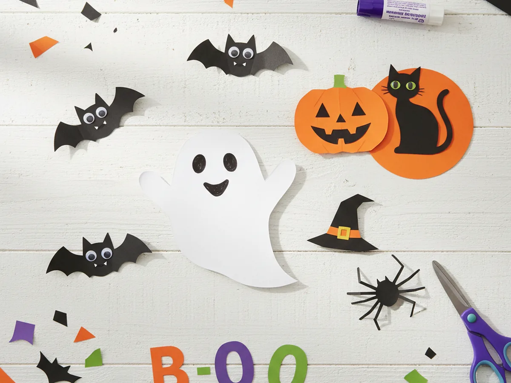
If your little one loves all things ghosts, bats, and friendly monsters, this list of spooky paper crafts is going to be a hit. We rounded up 20 of our favorite cute-spooky ideas, all simple enough for tiny hands and made with a few basic supplies you probably already have at home. The vibe is more sweet than scary, so even kids who get spooked easily will jump right in. 👻
What You'll Need
Most of these spooky paper crafts use the same handful of supplies, so one quick prep session covers you for the whole list.
- Construction paper in assorted colors, especially black, orange, white, and green for spooky themes.
- Black and white cardstock, sturdier than regular paper for masks, lanterns, and standees.
- Child-safe scissors with rounded tips, comfortable for little hands.
- Washable purple glue sticks, the disappearing kind so kids can see where they applied it.
- Crayola classic markers, perfect for adding faces and tiny spooky details.
- Self-adhesive googly eyes in mixed sizes, the secret weapon for instant character.
- Optional extras: yarn or string, washi tape, white chalk marker, small battery tea lights.
20 Cute Spooky Paper Craft Ideas
1. Folded Paper Ghost Lantern
Roll a sheet of white cardstock into a tube, draw a friendly ghost face on the front with marker, and slip a small battery tea light inside for a soft glow. The light makes the whole thing feel a little magical, especially in a darkened hallway. This is one of the sweetest spooky paper crafts for kids who want something a touch dramatic without anything actually scary.
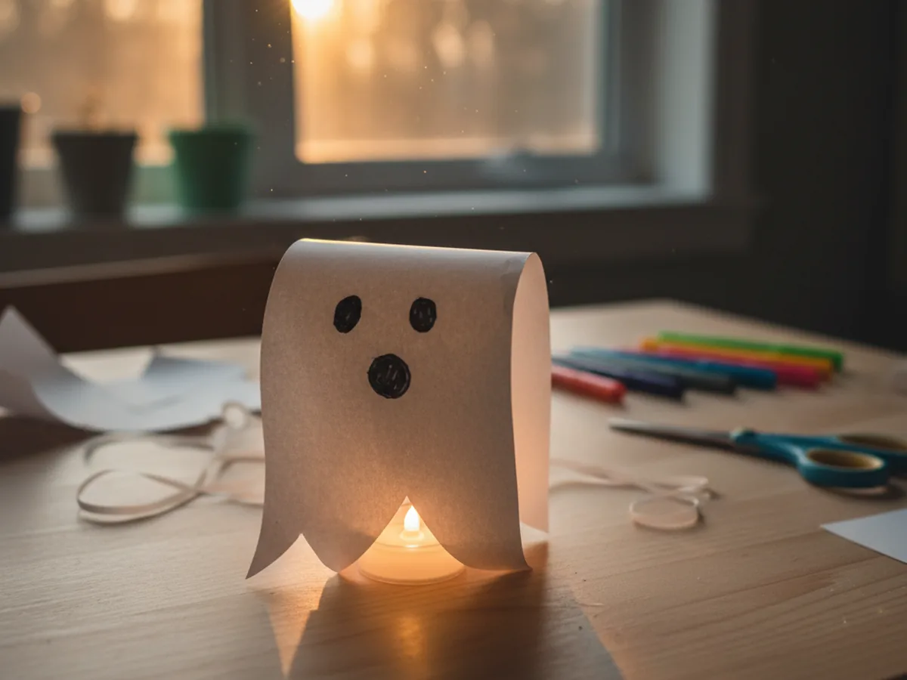
2. Hanging Paper Bat Mobile
Cut three or four bat shapes from black construction paper, add tiny googly eyes, and tape each one to a piece of string at different lengths. Tie all the strings to a small stick or a wire hanger to make a flying bat mobile for the bedroom window. Kids love watching them gently spin in the breeze.
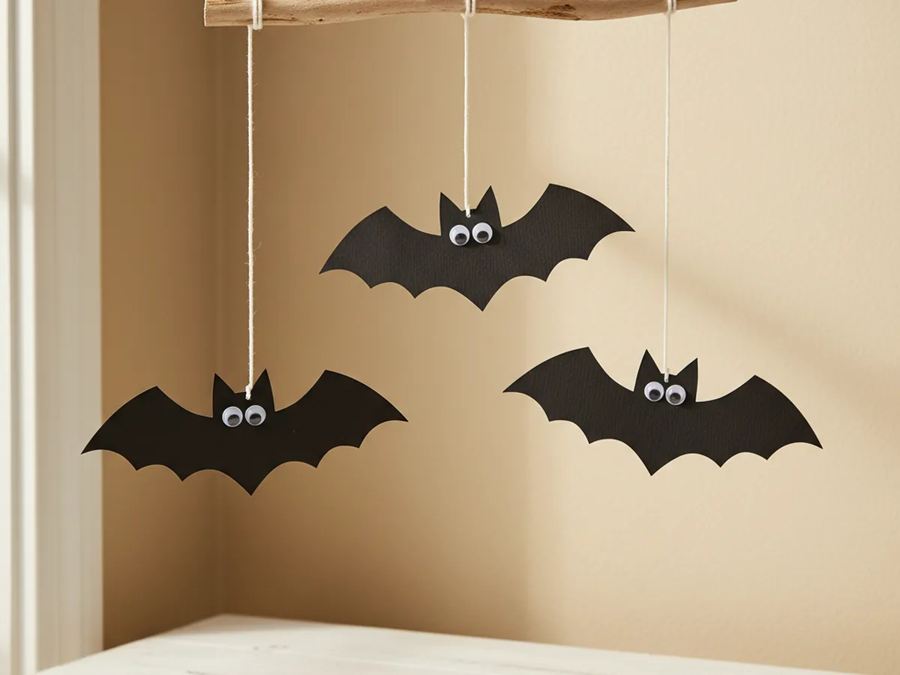
3. Paper Boo Banner
Cut three large bubble letters spelling B, O, O from orange cardstock, decorate them with markers or paper details, and string them together with yarn through small holes punched in the top corners. Hang the banner across a doorway or above the play area. Easy spooky paper crafts like this one feel festive without any complicated steps.
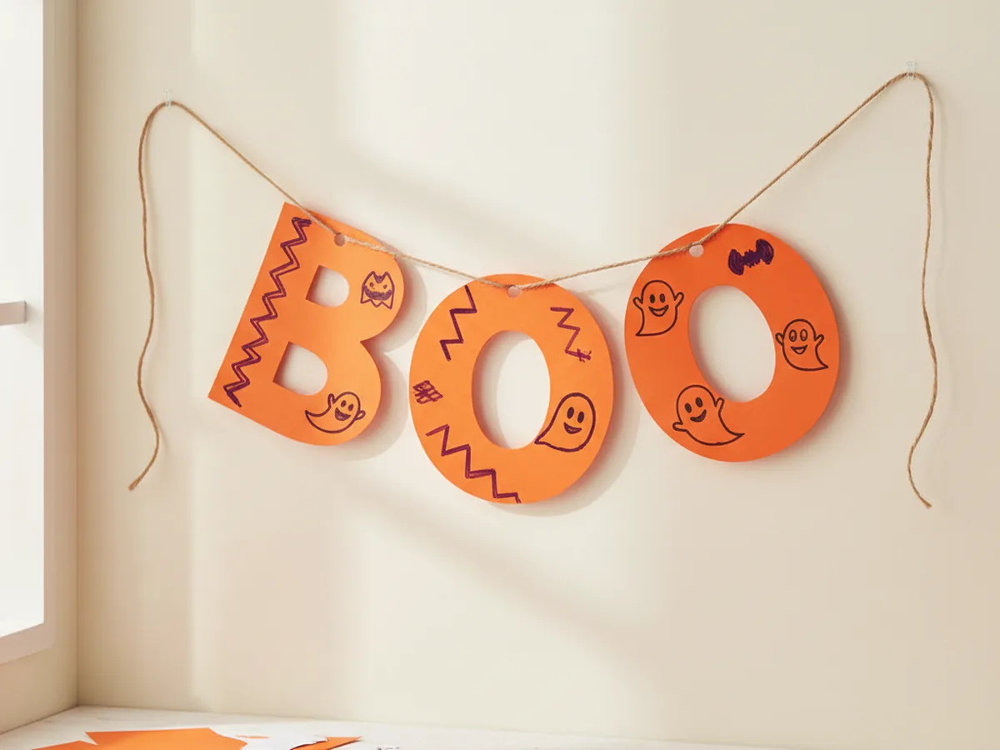
4. Crawling Paper Spider
Glue together a black paper circle body with a smaller circle for the head, then add eight thin paper strip legs and two googly eyes. Bend the legs slightly so the spider looks like it is mid-crawl. Tape it to a wall, a window, or even the side of a lamp for a cheerful little surprise.
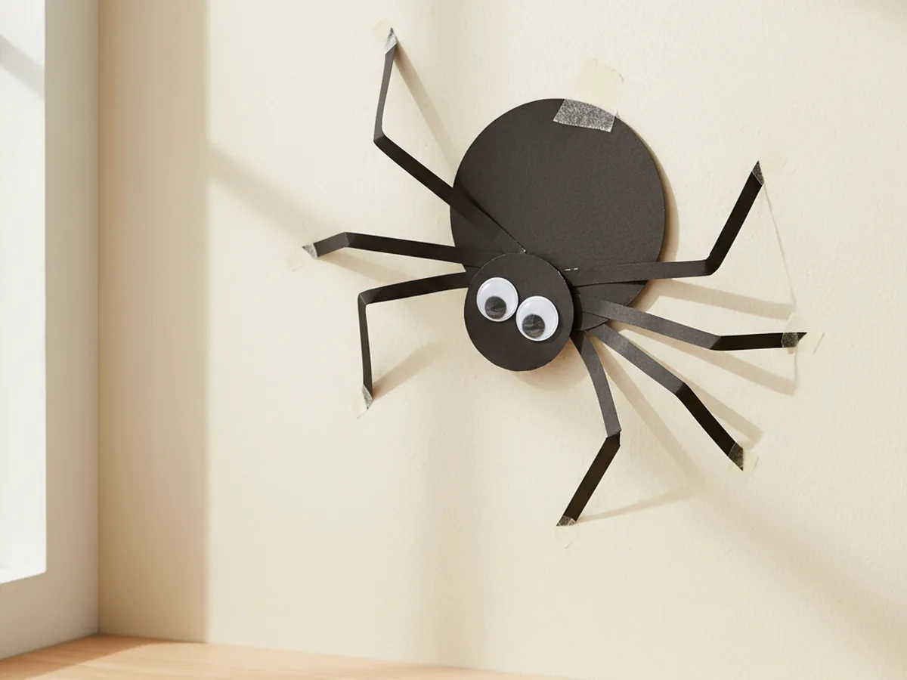
5. Black Cat in the Moon
Cut a large orange circle from cardstock to be the full moon, then glue a black paper cat silhouette right in the middle with a curved tail and pointed ears. Mount it on a dark background for a striking spooky paper craft that looks beautiful taped to a window. The contrast makes it pop, even when made by a 4-year-old.
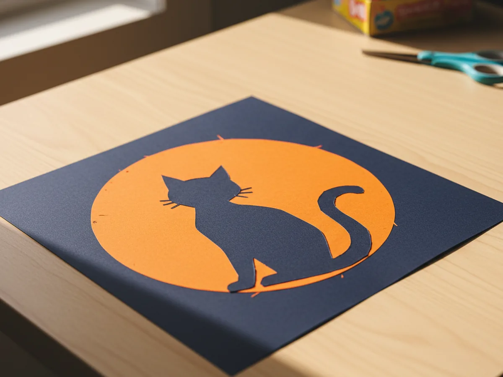
6. Paper Tombstone Standees
Cut grey or black paper into rounded tombstone shapes, write silly messages like "RIP Bedtime" or "Boo!" in white marker, and fold a small tab at the bottom so each one stands up. Line them up on a shelf or windowsill for a cute mini graveyard scene. Older kids love writing their own playful epitaphs.
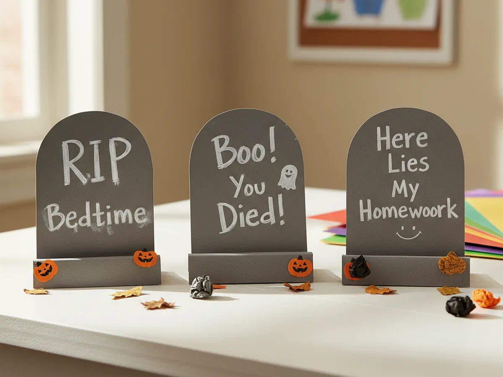
7. Mummy Corner Bookmark
Fold a square of white paper into a triangle pocket shape, wrap thin paper strips across it like bandages, and add two googly eyes peeking through the wrap. It slides perfectly onto the corner of a book and brings a little Halloween magic to story time. Great for kids who are starting to read on their own.
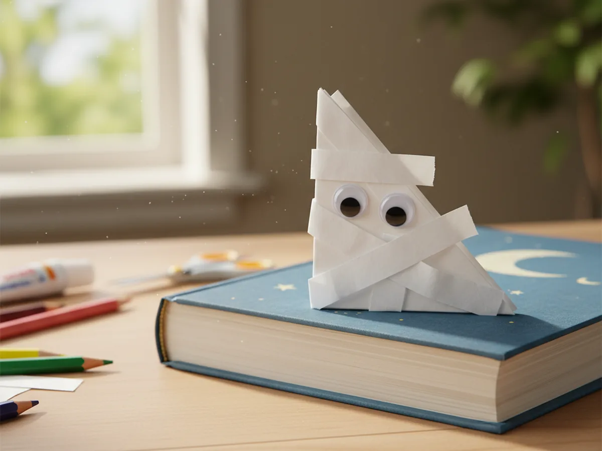
8. Paper Witch Finger Puppets
Roll a small triangle of black paper into a tiny cone that fits over a child's finger, glue on a wide brim, and add a face with markers. Make a whole row of them and put on a pretend witch parade across the kitchen table. These tiny spooky paper crafts are pure giggles for toddlers and preschoolers.
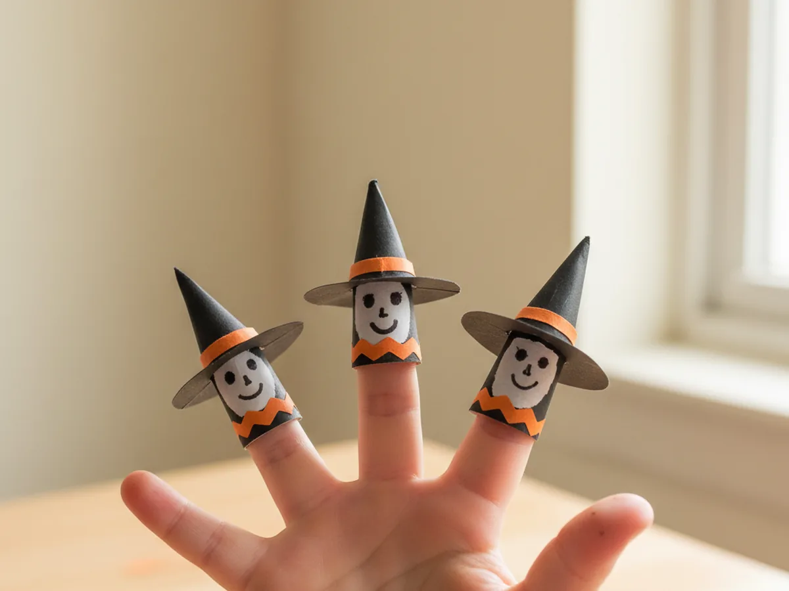
9. Paper Cauldron Treat Pouch
Fold a black paper rectangle in half, glue the side edges to make a pocket, and add a green paper "potion" shape peeking out the top with marker bubbles drawn on. Fill it with a few small treats or paper notes. This makes a sweet handmade gift for a sibling or a classmate during the Halloween season.
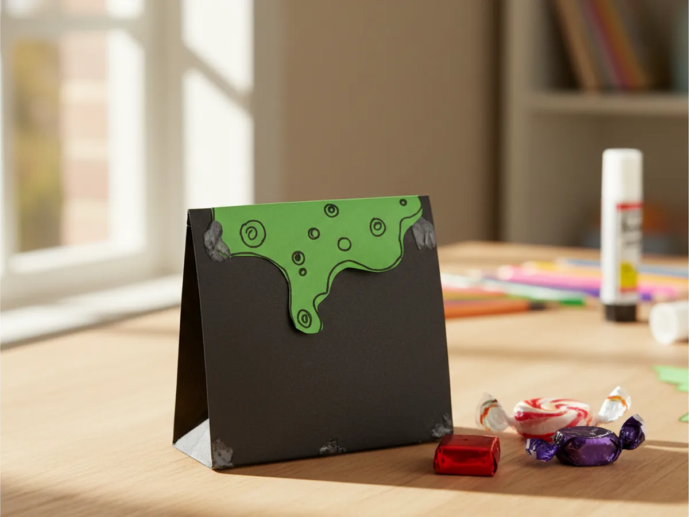
10. 3D Paper Pumpkin Lantern
Fold an orange piece of cardstock in half lengthwise, cut slits across the folded edge, then unfold and roll the paper into a cylinder so the cuts puff out into a pumpkin shape. Add a small green stem at the top and a paper face on the front. Toddlers can decorate while older kids do the cutting.
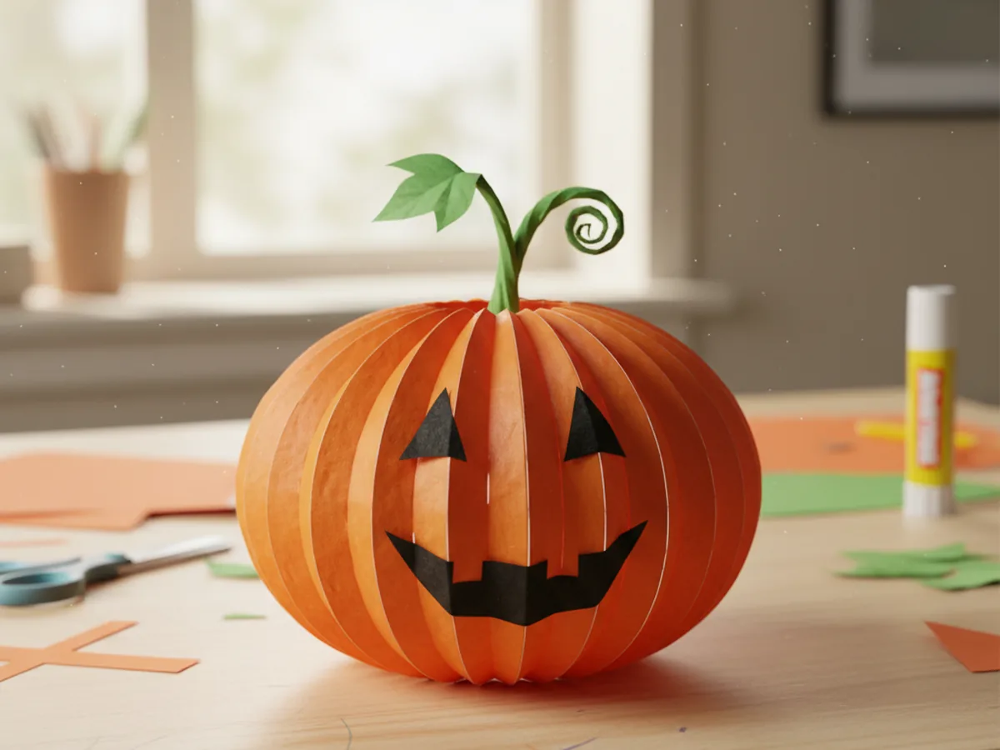
11. Paper Skeleton Friend
Cut white paper into simple bone shapes, a round skull, and a ribcage, then arrange them on a sheet of black paper to look like a full skeleton. Use brass paper fasteners at the joints if you want the arms and legs to actually move. This idea is a sneaky way to teach little ones the names of body parts. 💀
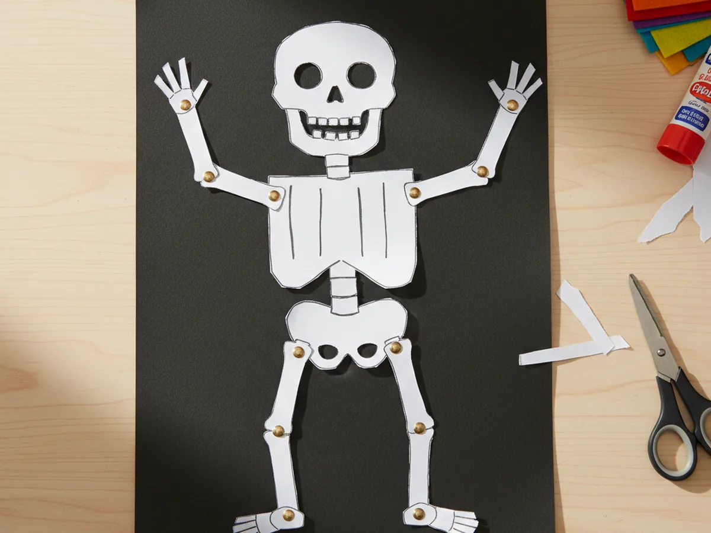
12. Vampire Paper Bookmark
Cut a small black paper rectangle for the cape, a flesh-toned face circle on top, and add tiny white triangle fangs and red marker eyes. Glue the whole thing onto a wider paper strip so it can slide between book pages. It is one of those cute spooky paper crafts that turns reading into a mini Halloween moment.
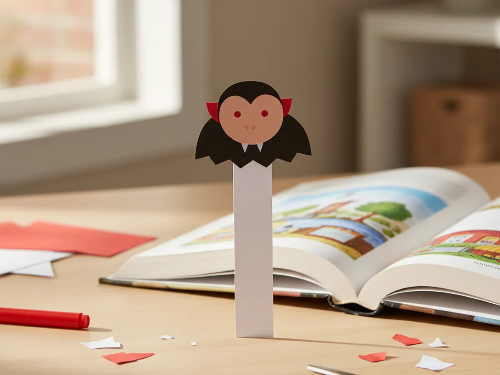
13. Paper Frankenstein Mask
Cut a wide green rectangle for the face, glue a strip of black hair across the top, add two square neck bolts on the sides, and finish with marker stitches and googly eyes. Punch holes for elastic so kids can actually wear it. Get ready for tons of dramatic stomping around the living room.
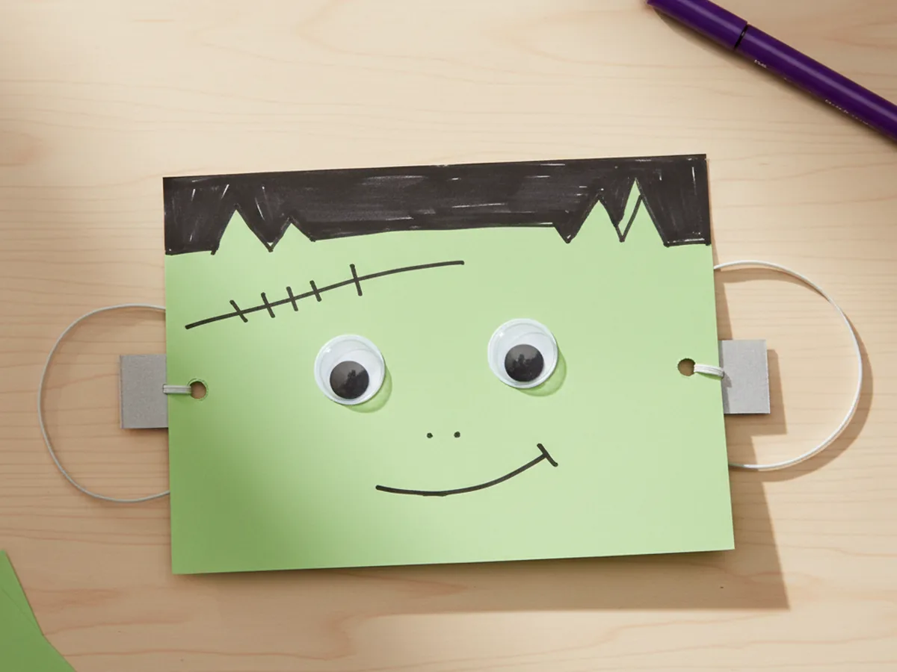
14. Paper Werewolf Headband
Cut two pointy ears and a furry brown paper strip from cardstock, then glue them onto a long strip sized to fit your child's head. Add tufts of paper fringe for extra fluff. Pop it on with a roar and the werewolf game is officially in full swing. Halloween costumes do not need to be fancy.
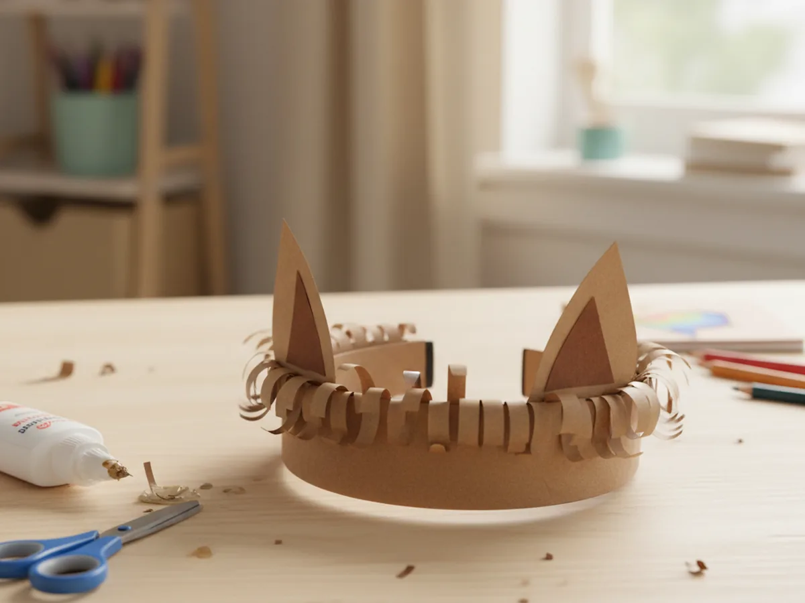
15. Paper Owl on the Moon
Cut a teardrop-shaped owl body from brown or grey paper, add two big white circle eyes, a tiny triangle beak, and glue it onto a yellow paper moon. Mount the whole scene on a dark blue background for a moonlit night feel. This is one of the sweeter spooky paper crafts for animal-loving kids.
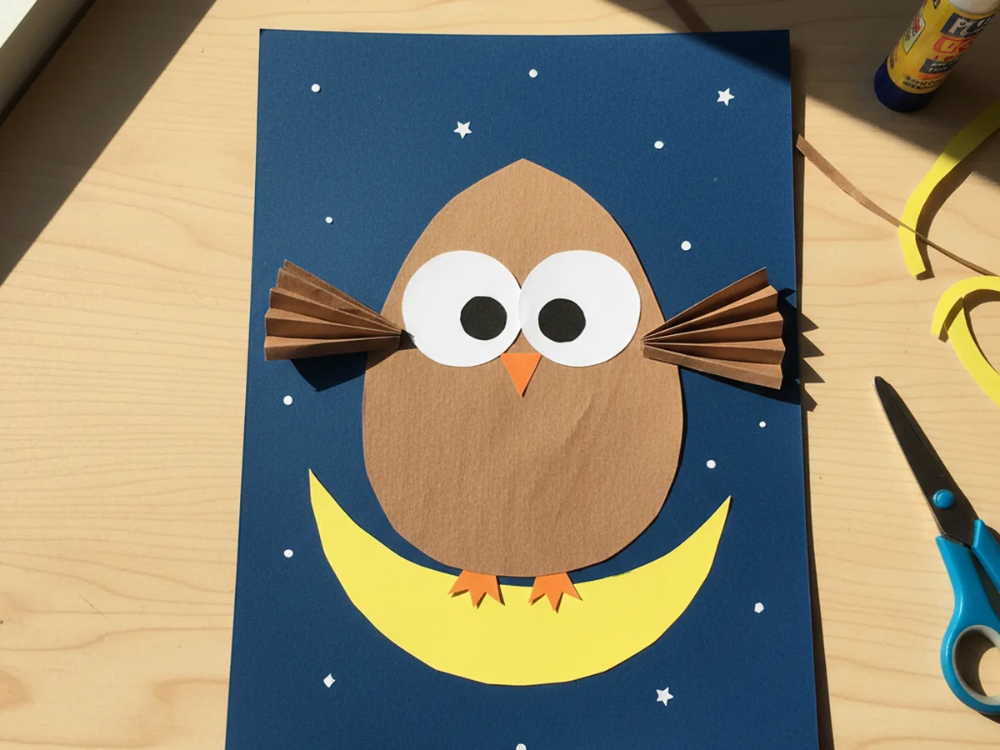
16. Paper Eyeball Garland
Cut about a dozen small white paper circles, decorate each one with a colored iris and a black paper pupil so each eye looks slightly different, then glue them along a long ribbon or string. Drape the garland across a bookshelf or doorway. Older kids love the silly factor of so many wiggly eyes staring back.
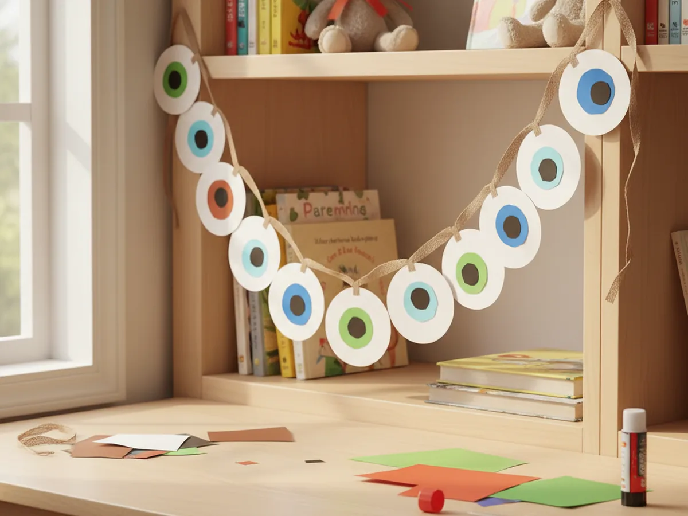
17. Paper Spider Web Wreath
Cut the center out of a paper plate or cardstock ring, weave white yarn or strips of white paper across the opening to look like a spider web, and add a small paper spider sitting on the side. Hang it on the front door or above a bedroom mirror. Beginners can use pre-cut paper strips instead of yarn.
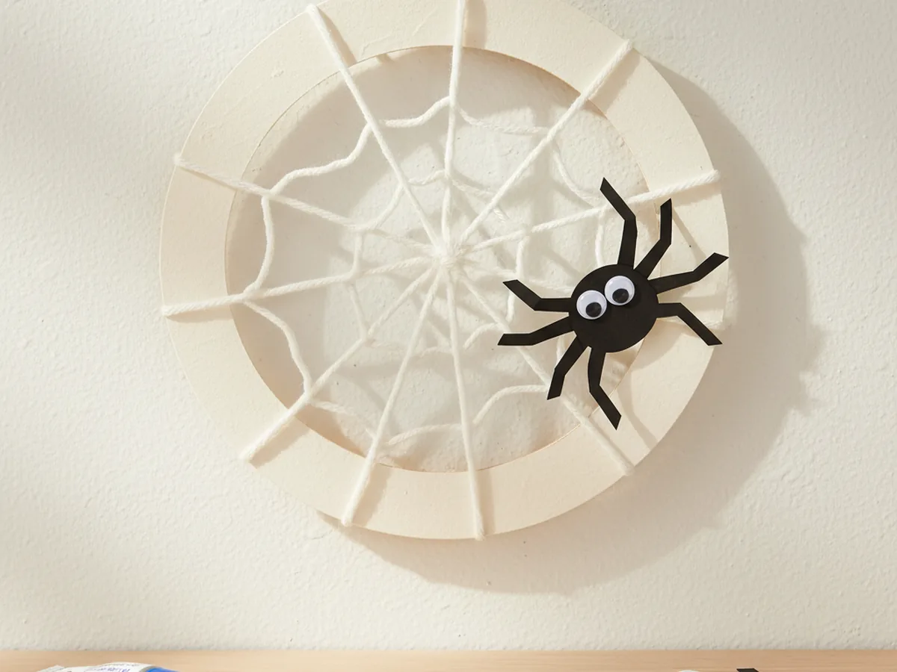
18. Paper Trick or Treat Sign
Cut a big rectangle of orange or white cardstock and let your child write or trace the words "Trick or Treat" in big chunky letters with markers. Decorate around the edges with small ghost, bat, or pumpkin doodles. Tape it to the front door for trick-or-treaters and you have an instant family welcome sign.
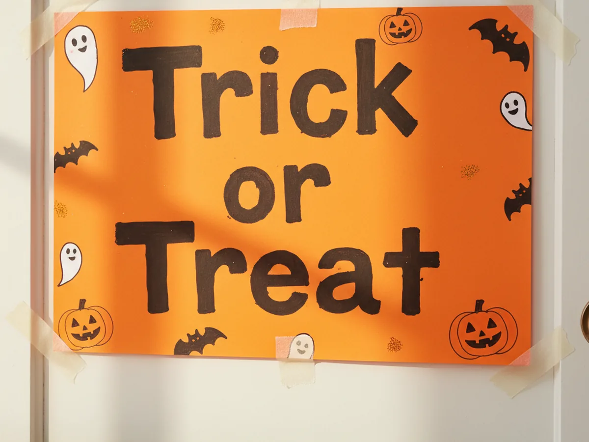
19. Paper Spooky Tree Scene
Cut a bare tree shape from black or dark brown paper with crooked branches, glue it onto a purple or grey background, and add a small paper moon, a few hanging bats, and tiny ghosts peeking from behind. The whole scene looks like something out of a storybook. It is a wonderful idea for a rainy Saturday afternoon together. 🦇
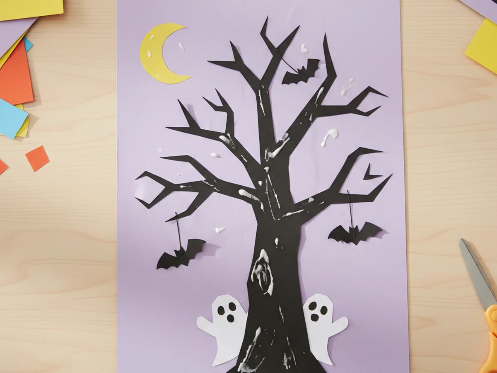
20. Paper Witch Hat Garland
Make a row of small black paper witch hats by rolling triangles into mini cones and gluing them onto small circular brims, each decorated with a thin orange or purple paper band. String them along a ribbon and hang the garland over a doorway. These mini spooky paper crafts for kids always look cuter all together than alone.
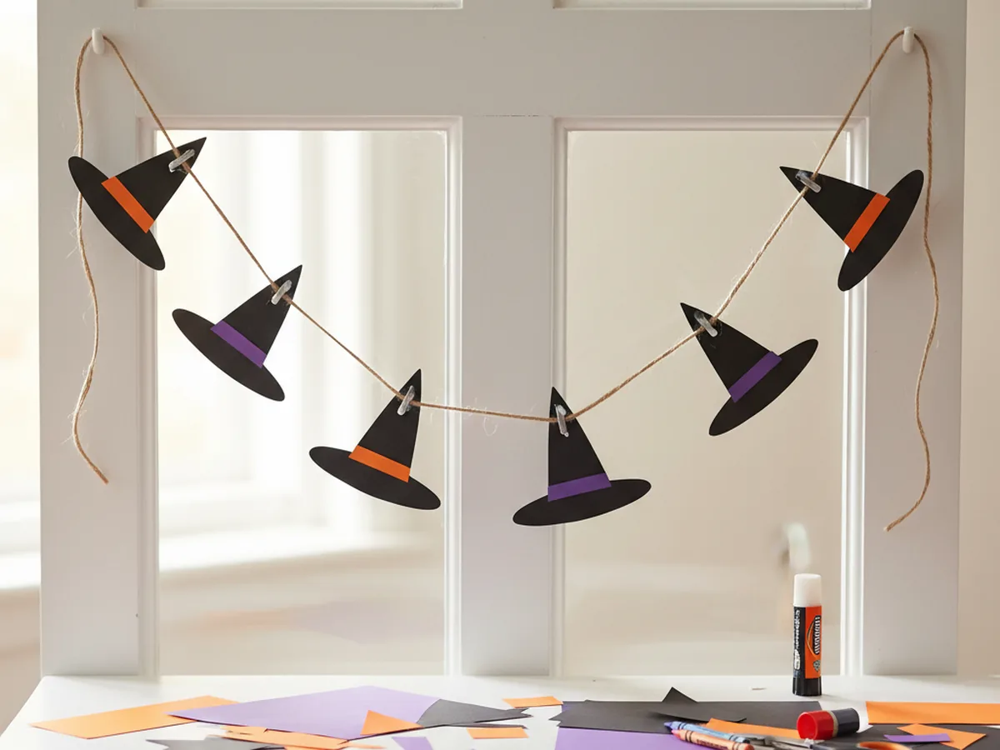
Final Thoughts
These spooky paper crafts are proof that the best Halloween memories do not need a costume store or a Pinterest-perfect setup. A stack of construction paper, a few googly eyes, and a giggling kid by your side is genuinely all it takes. Pick one idea today, save the rest for next weekend, or work through the whole list as the season unfolds. Whatever you choose, the moment you spend together is the real treat. 🎃
More Crafts You'll Love
If your little one is loving the spooky season, these two are perfect for your next afternoon together.
- 13 Adorably Spooky Paper Halloween Crafts Your Kids Will Beg to Make Every Year
- Cute Paper Craft Spider for Kids (5 Easy Steps!)
Have fun, save the scraps for next time, and enjoy every silly little moment with your child.